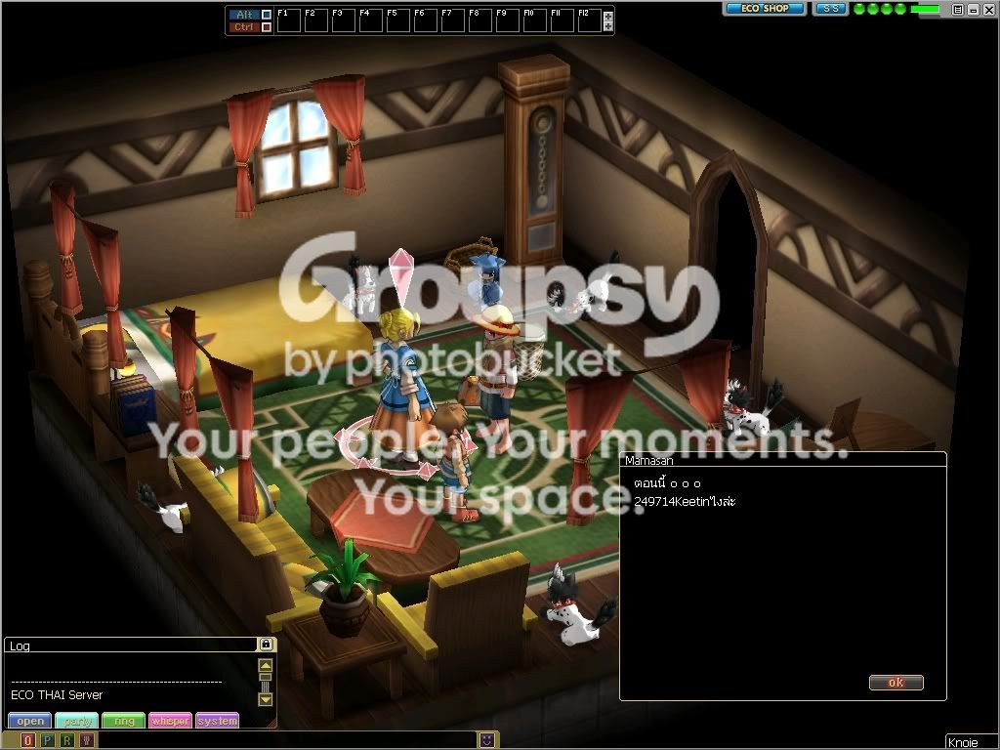

หน้า 4 จากทั้งหมด 13

โพสต์แล้ว:
พุธ 23 ม.ค. 2008 5:43 pmโดย ECO
ถึงแม้ตอนนี้จะมีหมาดำให้ลุ้นจากกล่องแคช(เพราะGMรู้ว่าพวกเราส่งคีตินเพื่อหมาดำ) แต่ก็พยายามกันต่อไปนะ สู้ๆ
โพสต์แล้ว:
พุธ 23 ม.ค. 2008 6:19 pmโดย ECO
นอกจากหมาดำแล้วยังมีของดีๆ อีกเพียบ!!!
เร่เข้ามา รับซื้อคีตินจ้าา
แล้วจะรู้ว่า ป้าเค้ารักสัตว์จริงๆ
โพสต์แล้ว:
พฤหัสฯ. 24 ม.ค. 2008 1:09 pmโดย ECO
ไปตั้งกระทู้ไว้หน้าข้อมูลเกมด้วยดีไหมนะ
คุณ crystalcross จ๋า ถ้าเข้ามาน้าา
ไปตั้งหมวดข้อมูลเกมล้วนๆ คนจะเข้ามาเยอะจ้า เพราะคนเพิ่งหัดเล่นจะไปเข้าหมวดนู้นมากกว่าหมวดนี้
แต่เราขออนุญาตไม่ไปนะ เพราะเพิ่งย้ายมา งิงิ
โพสต์แล้ว:
พฤหัสฯ. 24 ม.ค. 2008 3:15 pmโดย ECO
ไปตั้งเลยม่ำทำดีกัวไรไปเล้ยไปเลย
เด๋วตามไปขุดให้ อิอิ
โพสต์แล้ว:
ศุกร์ 25 ม.ค. 2008 9:38 pmโดย ECO
หน้าแรกจะมาอัพเดทได้ตอนตีสี่ครึ่งโดยประมาณของวันพุธนะคะ
เพราะมาตั้งโกเลมใหม่
แล้วเล่นได้เวลานั้น
โพสต์แล้ว:
เสาร์ 26 ม.ค. 2008 4:42 pmโดย ECO
จะพยายมาช่วยล่ะกันครับ ช่วงนี้สิงอยู่ที่ใต้เลยเจอแต่หนอนจรวดไล่กรวด ถ้าเก็บได้จะเอาไปโยนครับ
โพสต์แล้ว:
อาทิตย์ 27 ม.ค. 2008 7:49 amโดย ECO
ตอนนี้ก็สิงอยู่ที่ใต้แล้ววาปไปวาปมากลับหอแสงเหมือนกัน
เลยเอาตัวเวลน้อยนั่งจิ้ม จิ้ม
จนเวลหนึ่งขึ้นมาเวลสิบห้าแล้ว
เออ ปั้นตัวใหม่เล่นซะเลย :twisted:
โพสต์แล้ว:
อังคาร 29 ม.ค. 2008 3:13 pmโดย ECO
server: โมจิ
โกเลม: Knoie2
ครั้งนี้ : 981 keetin
รวมกับครั้งก่อน ๆ :1518 Keetin

โพสต์แล้ว:
อังคาร 29 ม.ค. 2008 6:33 pmโดย ECO
update แล้วจ้าา
east acronia coast ได้มา 2976ชิ้น
momo plain ได้มา 1200 ลืมแล้ว
utena river ได้มา 176 ชิ้น
งิงิ
ตัวที่ east acronia cost โดนไก่ตบตายซะแว้วว
โพสต์แล้ว:
อังคาร 29 ม.ค. 2008 9:38 pmโดย ECO
ใกล้ 250,000 แล้ว มาถึงครึ่งทางกันแล้วครับ
เราก็จะได้หมาดำมาเลี้ยงกันแล้ว สู้ต่อไป
โพสต์แล้ว:
พุธ 30 ม.ค. 2008 9:50 pmโดย ECO
ขณะนี้มียอดสะสมเกิน 250 k แล้ว
โพสต์แล้ว:
พฤหัสฯ. 31 ม.ค. 2008 11:17 amโดย ECO
กราบเรียนทุกท่าน ทั้งหลาย
การดำเนินงาน ของเรา คีตินไม่ได้เพิ่มเลย ซักนิ๊สเดียว
ยอดยังอยู่ที่ 13XX ตัว :oops:
เปลี่ยนเปงใส่เงินลงไปแทนดีมั้ยนิ -..-"
จริงๆมีตัวรับนะ (แต่มันรับหลายอย่างตรง East Acronia Field ไรเนี้ยแหละ ตัวละ 10g)
ปล. แล้วจะทำยอดต่อปาย~ เพราะตอนนี้ออนทิ้งไว้แล้วไปนอน
แต่ยังโหลดแพท ตรุษจีนไม่ผ่านเยย ทำม๊ายยย :x
โพสต์แล้ว:
ศุกร์ 01 ก.พ. 2008 1:15 amโดย ECO
สำหรับเรา ตีเองส่งเองเรื่อยๆ ไม่ค่อยโยนเข้าโกเล็มอยู่แล้วล่ะ่
โพสต์แล้ว:
ศุกร์ 01 ก.พ. 2008 8:43 amโดย ECO

สู้ๆ รอรับได้ 9999 อันแล้วจะไปโยนเหมือนกาน
โพสต์แล้ว:
อาทิตย์ 03 ก.พ. 2008 10:48 amโดย ECO
ไม่ได้เข้าเกมมานานพอสมควร เลยมะรุ้ว่า
เค้าปิดเซิฟไปเมื่อวันพุธ = =
โกเลมหลุด ไม่ได้ตั้งใหม่เลย
เลยเข้าไปดูซะเลย
ตัวที่อยู่ momo plain มี 999+797
utena river 177
east acronia coast 386 และก็ตายอีกรอบ...อีกแล้ว
แง (เวลหนึ่งเอง อิอิ)